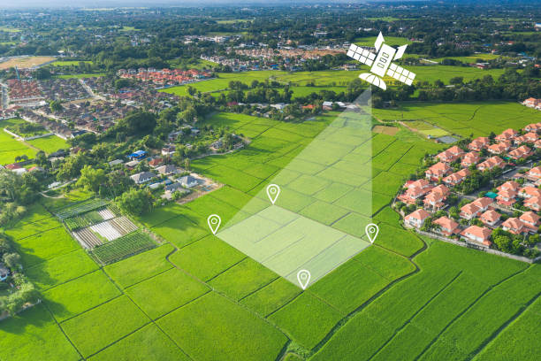
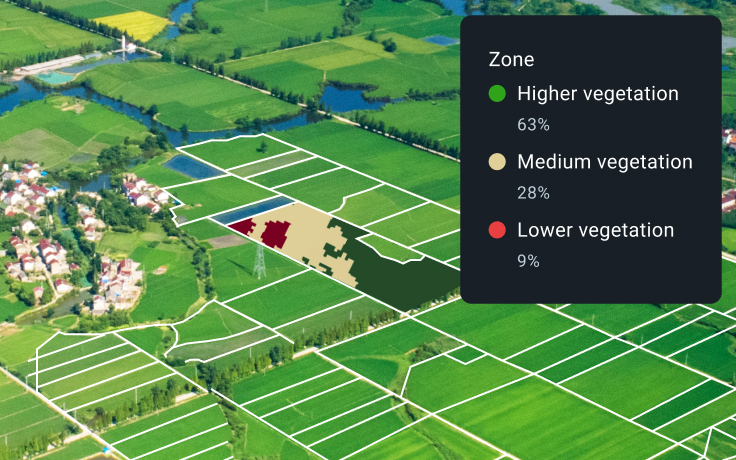
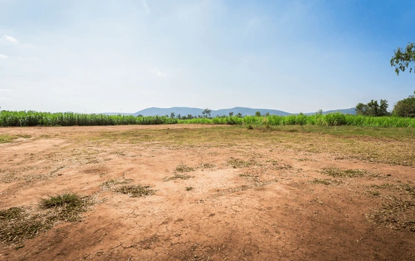
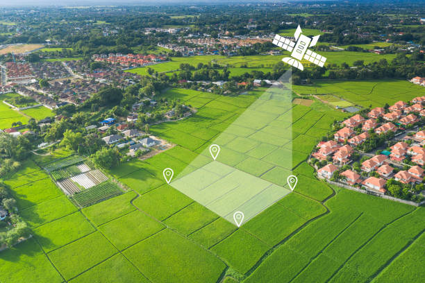
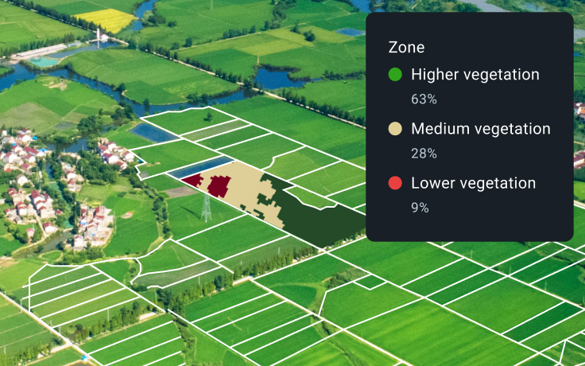
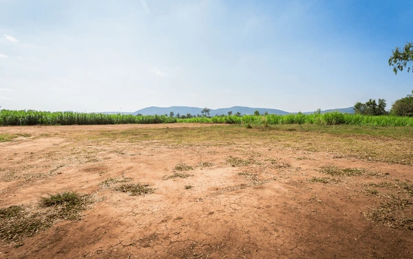

Introduction
Satellite technology is transforming the way farmers manage crops and livestock, offering unprecedented insights into field conditions, crop health, and environmental factors.
Potentials of Precision Farming
Precision farming, or precision agriculture, has been an expanding area of technology since the 1990s. It combines satellite imagery, GPS technology, and advanced data analytics to optimize farming practices.

Mapping
Understanding how large areas of land are used for different types of agriculture. Satellite imagery provides a bird's-eye view of entire regions, helping farmers and policymakers make informed decisions about land use and crop rotation.

Measuring
Plugging satellite data into complex algorithms to provide measurements on a range of properties, including soil moisture, crop health, and potential yield. This data helps farmers make precise decisions about irrigation, fertilization, and pest control.
Monitoring
Over time, images enable scientists and farmers to see how land use has developed, track the progress of crops throughout the growing season, and identify potential issues before they become serious problems.
Satellite Tech is Improving Efficiency and Reducing Fertilizer Use
We have seen how improving efficiency and refining processes in farming means farmers can optimize their use of resources. Satellite technology allows for targeted application of fertilizers and pesticides, reducing waste and environmental impact while improving crop yields.
Farmers See Benefits, and Barriers
This technology is not being used to replace farmers, it is there to help them make more informed decisions. However, barriers such as cost, technical knowledge, and internet connectivity in rural areas can limit adoption. Efforts are being made to make these technologies more accessible and user-friendly for farmers of all scales.
 




